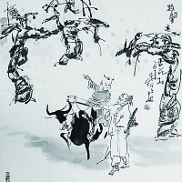

七夕节，又称七巧节、七姐节、女儿节、乞巧节、七娘会、七夕祭、牛公牛婆日、巧夕等，是中国民间的传统节日。七夕节由星宿崇拜衍化而来，为传统意义上的七姐诞，因拜祭“七姐”活动在七月七晩上举行，故名“七夕”。拜七姐，祈福许愿、乞求巧艺、坐看牵牛织女星、祈祷姻缘、储七夕水等，是七夕的传统习俗。经历史发展，七夕被赋予了“牛郎织女”的美丽爱情传说，使其成为了象征爱情的节日，从而被认为是中国最具浪漫色彩的传统节日，在当代更是产生了“中国情人节”的文化含义。

清明节
清明节，又称踏青节、行清节、三月节、祭祖节等，节期在仲春与暮春之交。清明节源自上古时代的祖先信仰与春祭礼俗，兼具自然与人文两大内涵，既是自然节气点，也是传统节日。扫墓祭祖与踏青郊游是清明节的两大礼俗主题，这两大传统礼俗主题在中国自古传承，至今不辍。